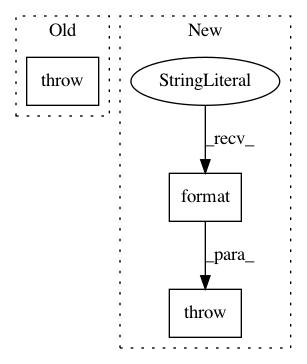

4aa8d26f3d50cc939fd5afb876e8f8c65e0ef06a,coremltools/models/feature_vectorizer.py,,create_feature_vectorizer,#Any#Any#Any#,15
Before Change
% (n, dim, ft.num_elements))
else:
if ft.num_elements is None:
raise ValueError("In feature %s, inherent size unknown so must be manually supplied.")
dim = ft.num_elements
num_output_dimensions += dim
After Change
"value size {}.".format(n, dim, ft.num_elements))
else:
if ft.num_elements is None:
raise ValueError("In feature {}, inherent size unknown so must be manually supplied.".format(n))
dim = ft.num_elements
num_output_dimensions += dim
In pattern: SUPERPATTERN
Frequency: 3
Non-data size: 3
Instances
Project Name: apple/coremltools
Commit Name: 4aa8d26f3d50cc939fd5afb876e8f8c65e0ef06a
Time: 2019-12-30
Author: kyleguss@icloud.com
File Name: coremltools/models/feature_vectorizer.py
Class Name:
Method Name: create_feature_vectorizer
Project Name: apple/coremltools
Commit Name: 14e57fc9f48f151b915f43aa1a43a45a6a13a0be
Time: 2019-12-23
Author: kyleguss@icloud.com
File Name: coremltools/models/utils.py
Class Name:
Method Name: save_spec
Project Name: apple/coremltools
Commit Name: 3e530f0fb84ba99e7cb6e84cc3547f1e1e5f01eb
Time: 2019-09-27
Author: bsonawane@apple.com
File Name: coremltools/converters/nnssa/coreml/ssa_converter.py
Class Name: SSAConverter
Method Name: convert